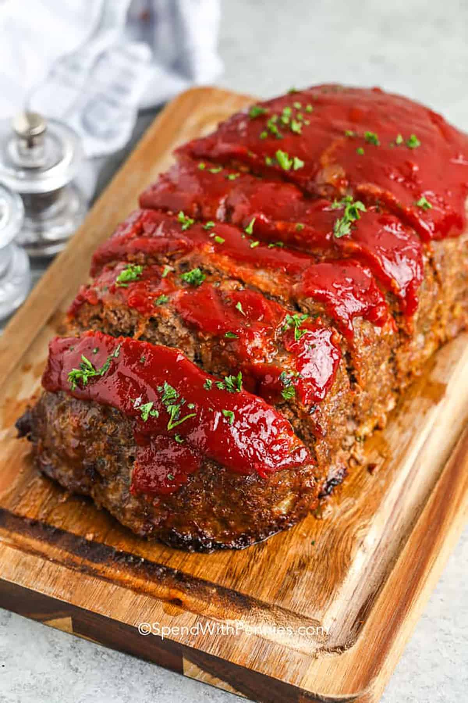

Home
Meatloaf Recipe

It’s made with lean ground beef, a handful of seasonings, onions, and a sprinkle of breadcrumbs. Then, it’s baked in the oven with a tasty zesty topping.
Ingredients
- Ground Beef: I recommend using 80/20 ground beef for the perfect balance of flavor and juiciness.
- Breadcrumbs: These help the meatloaf hold together and give it the right texture. Italian or seasoned breadcrumbs have extra flavor, but Panko bread crumbs will work too.
- Eggs: These help bind the meatloaf so it doesn’t fall apart when you cut it.
- Onions: Chopped onions add extra flavor to the meatloaf, pre-cooking them makes sure the flavor isn’t too strong.
- Seasonings: Fresh parsley adds a bright, fresh flavor while Italian seasoning are savory and aromatic. Of course, salt and pepper are essential for any recipe, and they help bring out the flavors of the other ingredients.
Meatloaf Sauce
My favorite meatloaf topping is a flavorful zesty topping that caramelizes and gets a bit sticky to glaze the meatloaf as it bakes.
In this sauce for meatloaf, I use a combination of chili sauce and ketchup (just like my mom always made) and a pinch of brown sugar.
Instructions
- Soften the onion in a pan (per recipe below).
- Combine all ingredients in a bowl.
- Form into a loaf on a baking sheet and bake (cook times below based on the size of the loaf).
- Top with the meatloaf sauce and bake until bubbly.